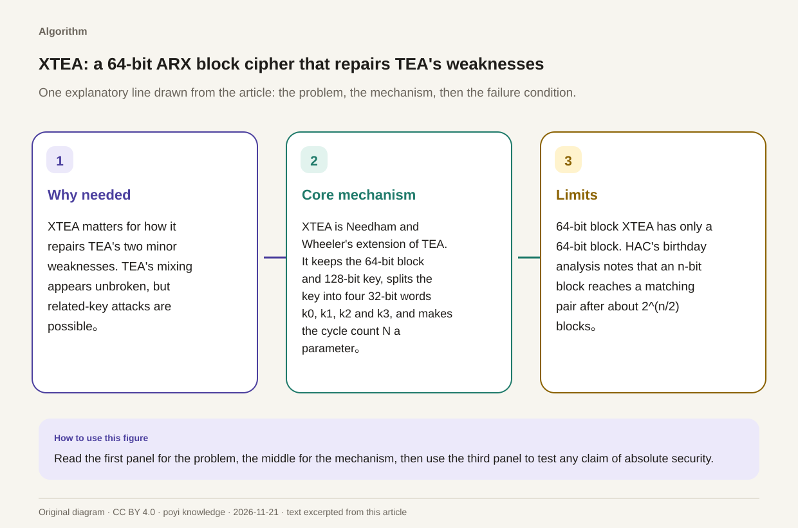
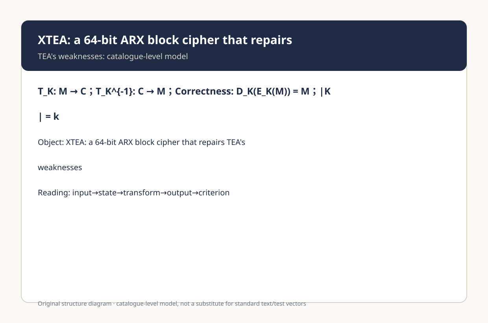

Principles
Algorithm: XTEA (XTEA 扩展 TEA). XTEA is Needham and Wheeler's extension of TEA. It keeps the 64-bit block and 128-bit key, splits the key into four 32-bit words k0, k1, k2 and k3, and makes the cycle count N a parameter; the paper recommends 32 cycles. Each cycle updates v0 and v1 once, so it contains 64 word updates, commonly called 64 rounds. Each cycle has this structure:
v0 += (((v1 << 4) ^ (v1 >> 5)) + v1) ^ (sum + key[sum & 3])
sum += delta
v1 += (((v0 << 4) ^ (v0 >> 5)) + v0) ^ (sum + key[(sum >> 11) & 3])
Here delta = 0x9e3779b9 and sum starts at 0; all additions are modulo 2^32, and the shifts and XORs are 32-bit operations. XTEA has no separate expanded-key array. It selects key[sum & 3] with the low two bits of sum and key[(sum >> 11) & 3] for the second update; the shift of 11 makes the selection sequence irregular and ensures all four key words are used in the first two cycles. This is one of the main structural differences from TEA. Decryption starts at sum = delta * N, inverts the v1 update first, subtracts delta, then inverts the v0 update; N must match encryption. The round function uses only addition, shifts and XOR, with no S-box or precomputed lookup table; there are only four key words, indexed by bits of sum.

Why it matters
XTEA matters for how it repairs TEA's two minor weaknesses. TEA's mixing appears unbroken, but related-key attacks are possible; TEA's effective key length is 126 bits rather than 128. XTEA's key-schedule and key-introduction changes target these two points. The paper claims the changes repair the weaknesses while retaining almost the same simplicity, little setup, many cycles and avoidance of complicated analysis. This is a design claim, not a complete security proof.
The paper recommends 32 cycles; each cycle has two updates, so it is commonly called 64 rounds. XTEA still uses a 64-bit block, whose birthday-collision bound is about 2^32 blocks, limiting safe data volume in large deployments. In this article's assessment, it is not a modern standard algorithm; it is best treated as a historical and teaching case, not as a default for new designs.
Applications
XTEA targets simple software implementations with little setup and many cycles; the round function uses only addition, shifts and XOR, with no S-box or precomputed lookup table, and only four key words indexed by bits of sum. It defines no mode of operation; practical use still needs CBC, CTR or another mode, plus independent integrity protection.
The 32-cycle reference vector is:
P = af20a390 547571aa
K = 27f917b1 c1da8993 60e2acaa a6eb923d
C = d26428af 0a202283
The 64-cycle extended vector is:
P = 2e6c1fe7 f5571f9d
K = 62ee209f 069b7afc 376a8936 cdc9e923
C = 7a01cbc9 b03d6068
Both vectors come from the Crypto++ XTEA/ECB test file, which attributes its vectors to Keith Lockstone's TEA and XTEA test-vector page. The 32-cycle vector matches the paper's recommended count; the 64-cycle vector tests parameterization and is not the recommended value.

Limits & attacks
XTEA has only a 64-bit block. HAC's birthday analysis notes that an n-bit block reaches a matching pair after about 2^(n/2) blocks; for 64 bits this is about 2^32 blocks. In large data volumes this limits safe use.
TEA's related-key attacks and 126-bit effective key length motivated XTEA's changes to key scheduling and key introduction. The paper says TEA's mixing appears unbroken, but related-key attacks are possible (constructing 2^32 texts under two related keys seems impractical); the 126-bit effective key mainly affects certain applications, not simple encryption/decryption. The paper claims the changes repair the two weaknesses; this is a design goal, not a complete security proof. This article does not restate unreferenced reduced-round attacks, and it does not equate repairing TEA's weaknesses with XTEA being secure against all attacks.
XTEA defines only a block cipher and provides no integrity or authentication. Flipping ciphertext changes the corresponding plaintext, but XTEA cannot detect it; authentication requires AEAD or encrypt-then-MAC.
This article's teaching implementation demonstrates only XTEA fixed vectors, 32/64-cycle encryption/decryption and a one-bit difference statistic. It does not generate keys, run in constant time, implement a mode of operation, protocol, key management or side-channel defenses, and must not be used in production. Having no large S-box or precomputed table reduces table-lookup side channels, but the implementation is still JavaScript and not constant-time, so it is not side-channel safe.
History
Needham and Wheeler's TEA extensions is dated October 1996, revised March 1997 and corrected October 1997; XTEA emerged from it. It keeps TEA's 64-bit block, 128-bit key and ARX style, but changes the key schedule and key introduction.
The paper also extends the method to larger Block TEA blocks; Block TEA is a different algorithm, not XTEA. The 1998 Correction to xtea says the attack is effective against Block TEA but not the original TEA or XTEA; what is usually called XXTEA/Corrected Block TEA is the corrected Block TEA, not XTEA. XTEA, TEA, Block TEA and XXTEA are separate entities.
Worked example & verification
Worked example
Take one published or standard test vector, record the input, the ordered steps and the byte-exact output, then compare with an independent implementation. Where no citable numeric vector is available, the entry records only structural steps and does not invent an output.
References
- Wikipedia search entry for XTEA 扩展 TEA. https://zh.wikipedia.org/w/index.php?search=XTEA%20%E6%89%A9%E5%B1%95%20TEA
- Handbook of Applied Cryptography (Menezes, van Oorschot, Vanstone). https://www.cacr.math.uwaterloo.ca/hac/